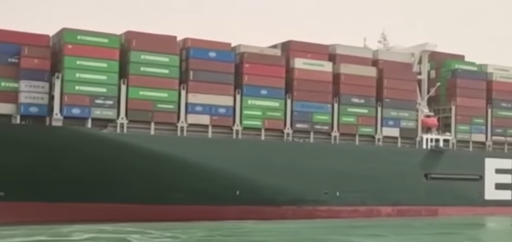

Нагадаємо, що 23.03.2021 судно ''Ever Given'' сіло на мілину при
проході Суецького каналу. На борту судна вантаж з понад 18 тис. контейнерів наповнених товарами,
які очікують у Європі. Причина аварії з'ясовується, попередня версія пов'язана із погодними
умовами, які вплинули на видимість. З обох сторін від місця події скупчились інші судна, частина
з яких вже повернулись та пішли в обхід півдня Африки. На фоні цієї події вже виросли ціни на
нафту та пальне, що, в тому числі, також, матиме й вплив на ріст цін на споживчі товари.
Якщо говорити про саму аварію, то численні експерти та спеціалісти займаються тим,
щоб витягнути судно з мілини, риють навколо борту грунт, тим самим збільшуючи глибину каналу в
місці аварії. Також судно звільняють від зайвої ваги - на разі контейнерів не знімать,
обмежуючись баластовою вагою. Але
будь-які спроби швидкого вирішення проблеми, без врахування всіх факторів може призвести до
падіння судна, або поломки його корпусу.
Нагадаємо, що 23.03.2021 судно ''Ever Given'' сіло на мілину при проході
Суецького каналу. На борту судна вантаж з понад 18 тис. контейнерів наповнених товарами, які
очікують у Європі. Причина аварії з'ясовується, попередня версія пов'язана із погодними умовами,
які вплинули на видимість. З обох сторін від місця події скупчились інші судна, частина з яких
вже повернулись та пішли в обхід півдня Африки. На фоні цієї події вже виросли ціни на нафту та
пальне, що, в тому числі, також, матиме й вплив на ріст цін на споживчі товари.
Якщо говорити про саму аварію, то численні експерти та спеціалісти займаються тим, щоб
витягнути судно з мілини, риють навколо борту грунт, тим самим збільшуючи глибину каналу в місці
аварії. Також судно звільняють від зайвої ваги - на разі контейнерів не знімають, обмежуючись
баластовою вагою. Але, будь-які спроби швидкого вирішення проблеми, без врахування всіх факторів
може призвести до падіння судна, або поломки його корпусу.
Давайте
повернемось до економічної складової. Зрозуміло, що непрохідність каналу протягом тривалого
часу, сама по собі має негативний вплив на вартість та час доставки товарів з Китаю - в
результаті це відобразиться на витратах кінцевих споживачів. З іншої сторони, варто згадати, що
в 2021 році, внаслідок зростання торгівлі між Китаєм та Європою суттєво зросла вартість
транспортування вантажів, а точніше продовжує рости, і на сьогодні вона в 4-5 разів вища ніж у
2020 році. Основна причина такого зросту - відсутність контейнерів для забезпечення
транспортування вантажів в необхідній кількості. Запасів товарів на складах немає, і це
підтверджує, що постачальникам наразі вигідніше частіше замовляти доставку та переплачувати за
неї, аніж тримати його в себе. Окрім того, багато товарів, не можуть довго перебувати на складі,
в тому числі через можливе моральне їх старіння в силу розквіту сучасних технологій. Очевидно,
що такою ситуацією користуються ''перевізники'', та отримують надприбутки за місце в контейнері.
Ситуація із судном на мілині в найближчому періоді продовжить ріст цін на транспортування,
оскільки частина товарів, які пішли в обхід, а також ті, що паралельно вийшли з портів Китаю, ну
і звісно ж ті, що вийдуть із заблокованого каналу, будуть створювати черги в портах Європи -
очікувати на вигруження вантажів, а це знову дефіцит контейнерів.
В
цілому ситуація, що виникла, а також думки експертів з економіки, наштовхують на висновок -
глобально, в майбутньому постачальникам та виробникам варто задуматись над зміною в процесі
ведення бізнесу. Не виключено, що ці зміни матимуть місце для поштовху перенесення частини
виробництва з Китаю, принаймні комплектування, в Європу, а також розвитку складської логістики.
А поки слідкуємо за тим, як продовжують свій ріст ціни на транспортування.

Опубліковано 3-28-2021